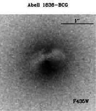

PHYS
3951 Capstone I.
Spring 2026
Regular Class Home page:
http://jpastro.net/PHYS3951-3971/syllP3951.html
Department: Physics and Astronomy
Class time and place: Wed 2:00-2:50 pm, SA 108A
Section: 1 (CRN=33323)
Instructor: Dr. Jason Pinkney
Office hours in 108A Science Annex at
these times:
10 am (R), 12 pm (W), and 1-2 pm (M,T,W).
Email j-pinkney@onu.edu
or call
419-772-2740.
Instructor's Home page: https://jpastro.net/
Credit hours: 1
|

Abell 1836 BCG
|
---------------------------------------
NEW STUFF
(Watch this spot for new links, data, etc.)
HST archive results for Abell 1836-bcg
HyperLeda galaxy database
---------------------------------------
PHYS 3951 Course Description:
Data gathering and analysis for a Capstone Research Project in
extragalactic astronomy. To be followed by the presentation and
write-up of results for the Capstone 2 course.
This work will require weekly meetings with advisor Dr. Pinkney
to familiar student with astronomical data reduction, analysis,
and modelling on a Linux platform. Student will be required to
do online research, read papers, and produce printouts of the
analyses performed.
Course Attributes:
Effective Communication and Writing, Critical and Creative Thinking
Prerequisites:
Undergraduate (Semester) level PHYS 3951, Minimum grade of D.
Text:
No textbook required. We depend on online resources, such as
scientific papers, for the research.
Course Goals, Objectives, and Learning Outcomes
Students should be able to:
- Think and express themselves clearly;
- Solve problems analytically and creatively;
- Listen, understand, and work with others;
- Demonstrate technological knowledge and skills;
- Practice truthful and ethical behaviors;
- Demonstrate knowledge, skills, and values related to the course
Tentative Calendar
| Week of |
Activity |
Progress |
| 1/22,24 |
Research |
|
| 1/27,29,31 |
Research |
|
| 2/3,5,7 |
Research |
Start poster |
| 2/10,12,14 |
Research |
|
| 2/17,19,21 |
Research |
|
| 2/24,26,28 |
Research |
|
| 3/3,5,7 |
Research |
|
| 3/10-14 |
SPRING BREAK |
|
| 3/17,19,21 |
Research |
|
| 3/24,26,28 |
Research |
|
| 3/31,4/2,4 |
Research |
|
| 4/7,9,11 |
SRC 4/8. EGLS Meeting 4/11/25 |
Poster presentation at one or both |
| 4/14,16 |
Research/ EASTER Fri |
Start PPT |
| 4/21,23,25 |
Research - creating PPT |
|
| 4/28,30,5/2 |
Research - creating PPT |
Capstone presentation |
| 5/5,7,9 |
Research - creating PPT |
Capstone paper due (finals week) |
Grading:
| Component |
|
Percent |
| Poster Presentation |
|
50% |
| Powerpoint presentation |
|
25% |
| Capstone paper |
|
25% |
Your final letter grade is assigned roughly as follows:
| < 55 |
55-70 |
70-80 |
80-90 |
90-100 |
| F |
D |
C |
B |
A |
I will not grade
any "harder" than the above. If the capstone paper
is postponed to the following semester, then the grade will
be 50% poster and 50% Powerpoint presentation.
Other Course Policies
Attendance is
at the weekly meetings is important for making progress on the capstone
project. Let me know in advance (e-mail is good) if you plan
to miss for a valid reason
(e.g. your team is on the
road, you are sick, you have a family emergency).
If you miss a quiz or exam because of an emergency, let me know
as soon as possible, and provide proof of the emergency.
"Proof" may consist of the
name and phone number of some parent or authority figure who knows your
Independent work is
is also very important for making progress on the capstone.
This means working (either in the lab or at home) on the research
outside of the meeting times. The student is expected to do at
least 2 hours per week of independent work in addition to the meeting times,
at least until completion of the project.
Cancelled Class.
If a class has to be cancelled due to weather or one of us being absent,
I am required to do something to advance the curriculum. I will notify
the student about what to do through an email. I will most likely assign
research tasks to be done independently.
Common syllabus information.
Here is
common course information
which applies to all courses. This includes the covid Safety Plan, Grading Modes,
Readmission, Repeat Policies, and more.
Other Mandatory Syllabus Information: